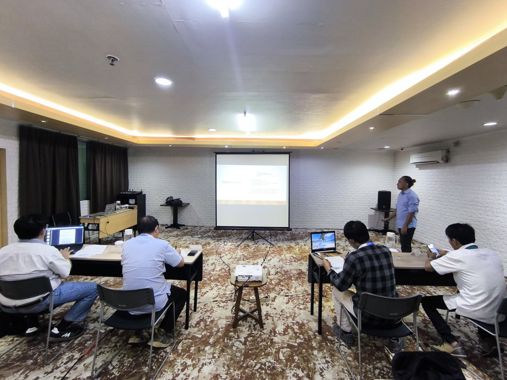
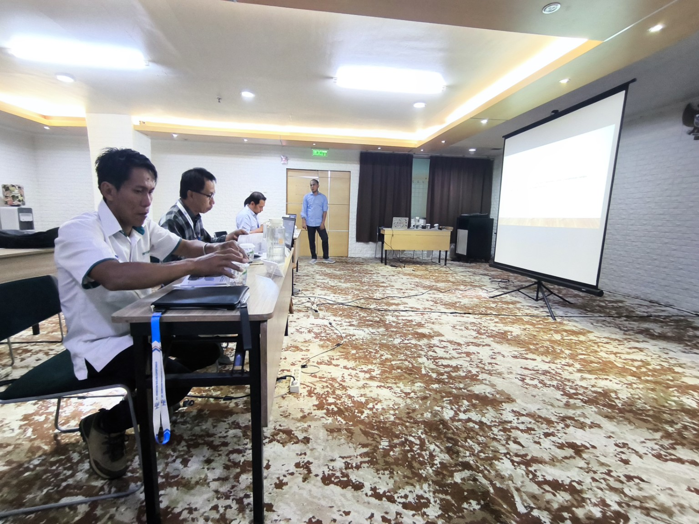
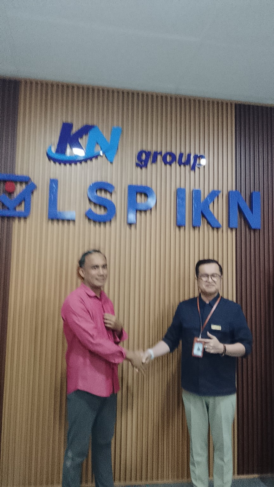
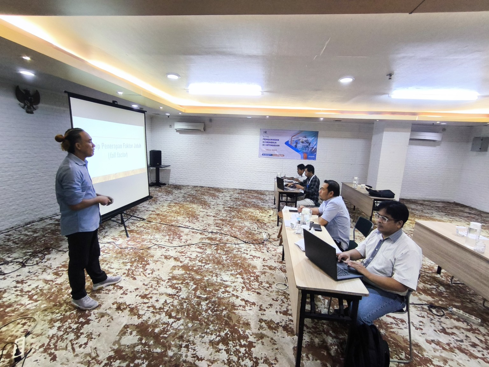
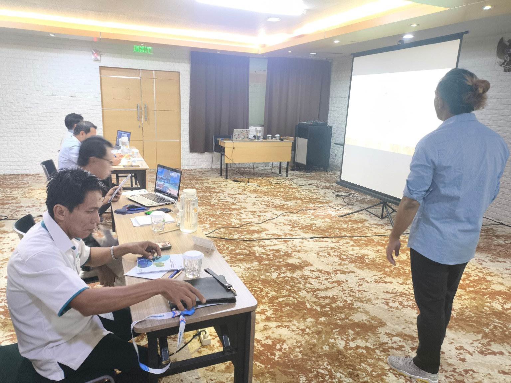
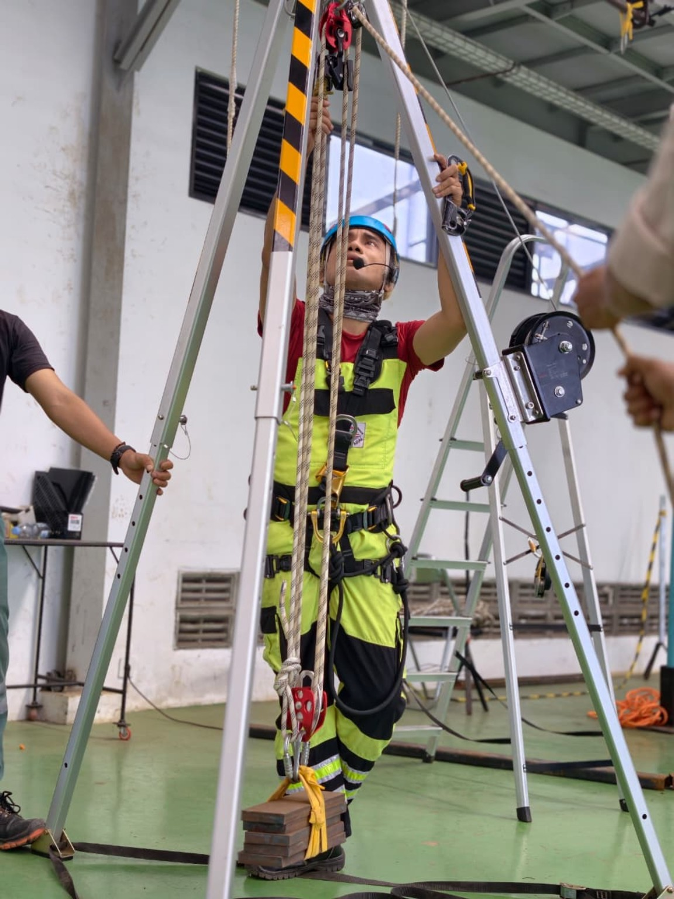
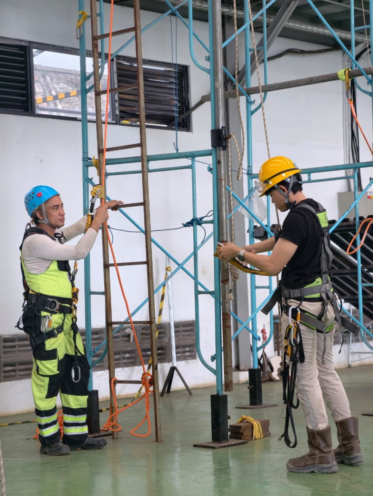

Training & Assessment
Professional Trainer, Master Trainer, Workplace Assessor, Asesor Kompetensi.
Workplace Assessor · Professional Trainer · Public Relations · Professional Guide · MICE · Rope Access Technician · Caver · Canyoner
25 tahun pengalaman dalam pelatihan, asesmen kompetensi, komunikasi, event, dan aktivitas petualangan.
Lihat Portofolio
Saya Yudha Wira, profesional multidisiplin di bidang pelatihan, asesmen kompetensi, public relations, MICE, dan aktivitas petualangan. Saya menggabungkan keahlian teknis, komunikasi, keselamatan, dan pengembangan sumber daya manusia.
Professional Trainer, Master Trainer, Workplace Assessor, Asesor Kompetensi.
Komunikasi, event support, koordinasi kru, dan pengelolaan acara.
Rope Access Technician, Professional Guide, Caver, dan Canyoner.
PIC · Rope Access
PIC Sports Day · PIC Kru · PIC Double Award
Training / Event
HIKESPI FINSPAC · 2007
BNSP · 2016
BNSP · 2026
Detail lembaga dan tahun menyusul.
Detail lembaga dan tahun menyusul.





